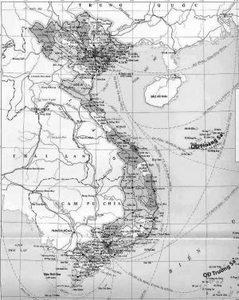
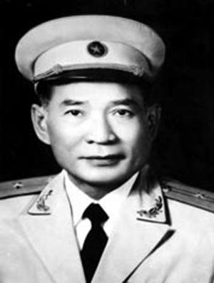
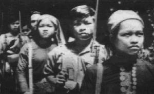
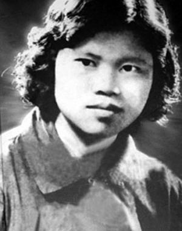
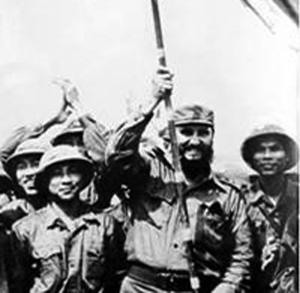
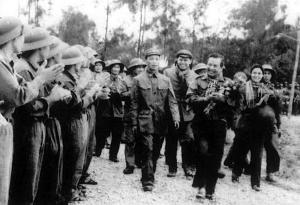

ĐƯỜNG MÒN VÔ ĐỊCH (A)

ột vài ý kiến tại Mỹ cho rằng nếu tiến hành cuộc chiến tranh ở Việt Nam một cách hợp lý, không có áp lực chính trị, thì người Mỹ đã chiến thắng. Trước khi trở lại Việt Nam vào năm 1994, tôi cũng nghĩ như vậy. Nhưng giờ đây tôi nghĩ khác. Chuyển biến trong tôi chỉ diễn ra sau khi tôi thấu hiểu được rằng người Việt Nam có một ý chí sắt đá để có thể chiến đấu đến chừng nào đạt được mục tiêu thống nhất đất nước mới thôi.
Không nơi nào mà quyết tâm được thể hiện rõ như thái độ những người sống và chiến đấu dọc Đường mòn Hồ Chí Minh và Địa đạo Củ Chi. Hiểu được quyết tâm duy trì Đường mòn cũng như bám trụ tại Địa đạo Củ Chi chính là hiểu được “chí thép” của họ.
Sau đây là câu chuyện lịch sử về quá trình hình thành và phát triển của Địa đạo Củ Chi và Đường mòn, trước hết là thông qua trải nghiệm của những người từng sống và chiến đấu ở đấy – những trải nghiệm đó là câu chuyện về lòng quyết tâm, tính kiên trì, sự khéo léo, những khó khăn, chịu đựng và sự hy sinh bản thân. Đó chính là ý chí thép đặc trưng và rất đặc biệt của người Việt Nam, vốn đã thôi thúc họ tiến lên để giành chiến thắng trong cuộc chiến trước người Mỹ - cuộc chiến mà nước Mỹ thiếu một quyết tâm tương xứng.
ĐƯỜNG MÒN VÔ ĐỊCH
(VÀ VÔ HÌNH)
Giới thiệu

Một điều không thể chối cãi đó là Đường mòn Hồ Chí Minh là chìa khóa thành công của Hà Nội trong cuộc chiến tranh chống Mỹ. Trên thực tế, sau chiến tranh, khi được hỏi rằng nếu người Mỹ làm điều gì trong cuộc chiến thì đã có thể thu được một kết quả khác, Đại tướng Võ Nguyên Giáp trả lời rằng một khi cắt đứt được Đường mòn thì có thể đạt được thành công lớn hơn.Đường mòn Hồ Chí Minh là một mạng lưới đường sá, điện thoại và ống dẫn dầu dài hàng ngàn cây số, xuyên qua rừng núi, nhiều khi vượt ra khỏi biên giới Việt Nam, sang Lào và Campuchia trước khi trở lại Việt Nam; thông qua tuyến đường này, Hà Nội đã lưu chuyển người, trang thiết bị chi viện cho chiến trường miền Nam.
Giai đoạn đầu cuộc xung đột, trước khi người Mỹ tham chiến, sự tồn tại của Đường mòn được giữ bí mật rất tốt.
Nhưng sau một thời gian, khi người và hàng hóa tiếp tục chảy vào miền Nam – mà không được vận chuyển bằng con đường Bắc – Nam dọc bờ biển rất dễ đi – chính quyền Sài Gòn bắt đầu nhận ra rằng Hà Nội rõ ràng đang sử dụng một lộ trình khác. Nhận biết lộ trình chính xác của Đường mòn là một trò chơi “trốn tìm” rất khó, không chỉ đối với quân miền Nam mà cả với người Mỹ. Hà Nội đã thành công lớn trong công tác giữ bí mật con đường này suốt thời chiến tranh bằng việc sử dụng các kỹ thuật đánh lừa đầy sáng tạo (nhiều lúc biến một số đoạn Đường mòn trở nên “vô hình”) cũng như tránh phổ biến thông tin về mạng lưới đường ngay trong chính lực lượng của mình.
Sau khi Sài Gòn sụp đổ vào tháng 4 năm 1975, thành tựu của Hà Nội trong việc bảo vệ bí mật về Đường mòn đã được biết đến rộng rãi. Vị tư lệnh Đường mòn, Tướng Đồng Sĩ Nguyên, khi trông thấy một bản đồ về hệ thống đường này tại tổng hành dinh quân đội Sài Gòn đã cười một cách hài lòng. Dù chính phủ Mỹ và Việt Nam Cộng hòa đã biết đến sự tồn tại của Đường mòn hơn một thập niên trước ngày Sài Gòn sụp đổ, tấm bản đồ trên cho Tướng Nguyên thấy rằng kẻ thù của ông không hề biết tới một bộ phận lớn mạng lưới đường bộ này.
Khi phát hiện ra một số phần của Đường mòn Hồ Chí Minh, người Mỹ chợt nhận thấy họ đang bị kéo vào một cuộc đua ý chí với Hà Nội. Đây là cuộc đọ sức giữa một bên là quyết tâm của Hà Nội trong việc duy trì Đường mòn với bên kia là nỗ lực của Washington về phá hủy hoặc giảm lượng lưu thông trên hệ thống đường này. Để đạt được mục đích, Mỹ đã quyết định triển khai chiến dịch ném bom lớn nhất trong lịch sử - một chiến dịch được thiết kế để phá hủy Đường mòn, để ngăn chặn lưu thông và đánh tan nhuệ khí đối phương. Tuy nhiên, dù không biết bao nhiêu bom đạn đã được ném xuống đây thì rất nhiều phần của con đường vẫn không hề hấn gì – tương tự như ý chí quyết tâm chiến đấu đến cùng của Hà Nội.
Lập Đường mòn Hồ Chí Minh không phải là một ý tưởng mới. Gần hai thế kỷ trước, Hoàng đế Huệ(Vua Quang
Trung – Nguyễn Huệ) đã hình dung về một con đường như thế trong cuộc chiến chống quân Thanh. Hệ thống đường này là một phương tiện hữu hiệu để đối phó với kẻ thù mạnh hơn vốn đang chiếm cứ các vùng đất dễ đi lại của Việt Nam, chẳng hạn miền duyên hải. Trước đó chừng bốn trăm năm, danh nhân Nguyễn Trãi đã đúc kết: “Để có thể lấy yếu chống mạnh, lấy ít địch nhiều, phải buộc đối phương đánh theo cách mà chúng ta muốn”.
Đúc kết này luôn được các lãnh đạo Việt Nam, vốn đã thấm nhuần các bài học của Nguyễn Trãi, tương tự Hoàng đế Huệ, quán triệt. Là những người thông làu lịch sử, họ nhận thấy – bằng sự hiệu quả của Đường mòn – một cơ hội để buộc quân thù phải chiến đấu theo cách mà người Việt Nam muốn. Trong khi đó, những người Mỹ kém may mắn đã không biết rút ra bài học này từ lịch sử Việt Nam.
Lẽ ra người Mỹ cần phải nghiên cứu lịch sử Việt Nam để từ đó có thể cảnh báo cho giới lãnh đạo thời thập niên 1960 về hệ quả mà lực lượng mặt đất của Mỹ phải lãnh lấy khi tham chiến. Nếu không thay đổi được các quyết định, việc làm này cũng có thể giúp người Mỹ chuẩn bị kỹ càng hơn để đối phó với những gì ở phía trước, giúp họ hiểu hơn về tinh thần dân tộc và chí khí của người Việt Nam.
Những con người sống và chiến đấu dọc Đường mòn Hồ Chí Minh là bằng chứng rõ nhất về tinh thần đó. Vượt qua bao gian nguy của cuộc sống trong rừng, nỗi buồn khổ vì xa cách gia đình mà đối với nhiều người kéo dài suốt cuộc chiến; vượt qua vô số trận ném bom dữ dội, nhiều người lính này đã giúp giữ được con đường huyết mạch ra tiền tuyến trong suốt cuộc chiến tranh.
Phát triển Đường mòn là một thành tựu đáng kinh ngạc. Công việc này thể hiện tinh thần xả thân vì đại nghiệp và là minh chứng rõ nhất cho tinh thần dân tộc – hay còn gọi là “chí thép” – của người Việt Nam. Sự tồn tại của con đường là một thách thức đối với khả năng của Mỹ trong việc làm gián đoạn – nhưng không thể ngăn chặn – cuộc hành quân của Hà Nội tới thắng lợi.
Trong nhiều thế kỷ, các quân đội xâm lăng Việt Nam đã phải hứng chịu một bài học đắt giá – địa hình đất nước này có vẻ như tạo thuận lợi cho lực lượng xâm lược nhưng thực ra quân phòng thủ mới nắm giữ lợi thế. Nhìn qua bản đồ sẽ biết điều đó. Việt Nam là một đất nước trải dài 1.609 km. Về chiều ngang thì nơi hẹp nhất vào khoảng 50-70 km và nơi rộng nhất là 200 km. Địa hình hẹp và bằng phẳng, trải dài chủ yếu trên miền duyên hải phía đông giúp quân xâm lược có được một tuyến đường lý tưởng để từ phương Bắc thọc sâu xuống phương Nam dễ dàng.
Nước xâm lược Việt Nam thường xuyên nhất chính là Trung Quốc, vốn có quân đội đông đảo hơn những người Việt Nam bảo vệ Tổ quốc rất nhiều. Với nguồn tài nguyên có giới hạn, Việt Nam buộc phải phát triển chiến lược phòng thủ để đánh quân xâm lược theo cách của mình. Chiến lược này bao gồm việc lợi dụng rừng núi ở phía Tây. Bằng cách đó, người Việt Nam có thể che giấu các cuộc hành quân, chủ động chọn thời điểm và địa điểm đột kích kẻ thù. Vì thế, việc mở một con đường bí mật để chuyển người và trang thiết bị từ phía Bắc và phương Nam là một bước đi tất yếu.
Được dân miền Bắc gọi là Đường Trường Sơn – đặt theo tên dãy núi mà nó đi qua – mạng lưới đường này sau đó được người Mỹ biết đến với tên gọi Đường mòn Hồ Chí Minh. (Cách gọi “đường” hay “đường mòn” không mấy chính xác, bởi vì hình thức “đường mòn” chỉ tồn tại trong một giai đoạn ngắn ban đầu, sau đó người ta đã nhanh chóng phát triển thành một hệ thống đường rộng lớn).
Có thể thấy rõ là kết cục của cuộc chiến tranh tại Việt Nam đã được quyết định không phải bởi những gì diễn ra trên chiến trường miền Nam, cũng không phải ở những đợt ném bom xuống Hà Nội ở miền Bắc – mà bằng những gì diễn ra dọc Đường mòn Hồ Chí Minh. Sự tồn tại của con đường này là một minh chứng về sự khéo léo, tinh thần chiến đấu ngoan cường và quyết tâm không bao giờ tắt của một dân tộc sẵn sàng chịu mọi hy sinh để giành thắng lợi cuối cùng.
Trong giai đoạn đầu tìm hiểu để viết cuốn sách này, tôi đã có cơ hội đầu tiên nhìn từ bên trong – cũng như tiếp cận được một manh mối đầy thách đố - về sự khéo léo của những nhà thiết kế Đường mòn. Tôi đã gặp một quý ông Hoa kiều cao tuổi ở Thành phố Hồ Chí Minh (ngày trước là Sài Gòn), người đã sống phần lớn cuộc đời mình ở Việt Nam. Trong câu chuyện, tôi bày tỏ dự định viết về cuộc chiến tranh từ góc nhìn của người Việt Nam. Khi nghe điều này, mắt ông sáng lên. Ông gợi ý rằng khi gặp cựu quân nhân Việt Nam, tôi nên hỏi họ về những chiếc cầu và những con đường “vô hình” trên Đường mòn Hồ Chí Minh. Không cho biết thêm nhiều chi tiết nữa nhưng rõ ràng ông đã khơi gợi sự quan tâm của tôi.
Sau này tôi mới nhận ra rằng rất ít cựu chiến binh Việt Nam biết tường tận về những chiếc cầu “vô hình” và số người biết rõ về những con đường “vô hình” thậm chí còn ít hơn. Tôi đã phải thực hiện hàng chục cuộc phỏng vấn trước khi có thể hiểu được ngụ ý của quý ông Hoa kiều kia. Chi tiết về sự vô hình của Đường mòn sẽ được đề cập ở cuối chương này. Đó là những tiết lộ đáng kinh ngạc về cách thiết kế tài tình nhưng đơn giản được áp dụng đối với Đường mòn. Tôi được biết thêm rằng sự tài tình đó là nguyên tắc chứ không phải là ngoại lệ đối với những người chịu trách nhiệm duy trì Đường mòn Hồ Chí Minh.
Nếu hiểu rõ khối lượng to lớn công việc cần thực hiện để duy trì chức năng của Đường mòn, chúng ta sẽ có sự tôn trọng đúng mực đối với những người làm nhiệm vụ ở đây. Việc duy trì khả năng hoàn thành nhiệm vụ thường xuyên trong suốt cuộc chiến, dưới điều kiện khắc nghiệt mà họ phải đối mặt, với tai họa khủng khiếp mà con người lẫn thiên nhiên gieo lên đầu họ, là một bằng chứng xác thực về sức mạnh tinh thần.
Ý chí thép ở đây chính là hình ảnh những người lính – trong giai đoạn đầu tiên – đi bộ dọc Đường mòn, với hàng hóa trên vai, băng qua hàng ngàn cây số đủ mọi địa hình mà không hề nề hà khó khăn gian khổ, chỉ tâm niệm một điều là làm sao đến được chiến trường miền Nam nhanh nhất. Âm thầm, cẩn trọng, họ đi dọc Đường mòn. Mỗi bước chân của họ đều bị bủa vây bởi hiểm nguy rình rập; đó là những trận ném bom của quân thù, những căn bệnh nguy hiểm, móng vuốt của thú dữ hay sự khan hiếm lương thực. Nhiều người trong số họ không bao giờ trở về.
Khai sinh tuyến đường bộ bí mật vào miền Nam.
Ngày 21 tháng 7 năm 1954, Hiệp định Genève đánh dấu cuộc chiến chống Pháp kết thúc sau trận đánh Điện Biên Phủ. Đất nước Việt Nam bị chia cắt và ngay sau đó, Hà Nội muốn thông qua hiệp thương để thống nhất Bắc – Nam. Khi chính quyền ở cả miền Bắc lẫn miền Nam đều có các hoạt động vũ lực; rồi chính quyền Sài Gòn mở chiến dịch khủng bố nhằm vào những người có cảm tình với miền Bắc, Hà Nội nhận định rằng một cuộc xung đột quân sự có thể là bước đi cần thiết cuối cùng để đạt được những gì mà đàm phán đã thất bại.
Tháng 1 năm 1959, Tổng Bí thư Đảng Cộng sản Việt Nam triệu tập một cuộc họp để bàn về thống nhất đất nước. Cuộc họp dẫn tới quyết định cần phải lập một tuyến đường bí mật để vận chuyển người, vũ khí, lương thực, v.v., từ miền Bắc vào miền Nam.
Với việc thông qua Nghị quyết 15 của Trung ương Đảng Cộng sản Việt Nam, Đường mòn Hồ Chí Minh đã trở thành hiện thực. Trần Công Tấn, một nhà văn, sử gia và là người đi lại thường xuyên trên Đường mòn thời chiến tranh, cho biết quyết định đã được đưa ra là “Hà Nội sẽ gửi quân chi viện cho miền Nam” bởi vì cuộc thanh trừng của chính quyền Sài Gòn được Mỹ hỗ trợ. (Washington bắt đầu huấn luyện cho quân đội miền Nam từ năm 1955). Nghị quyết đã phát quang lộ trình lập một tuyến đường bí mật từ miền Bắc (với điểm đầu nằm phía Nam Hà Nội) tới miền Nam, để thông qua đó có thể tiếp viện phục vụ cho việc giải phóng miền Nam.

Để xây dựng lộ trình ban đầu cho tuyến đường, chính quyền Hà Nội chọn một quân nhân xuất sắc trong chiến tranh chống Pháp, Đại tá Võ Bẩm. Bẩm được chọn vì ông quá thông thuộc khu vực này, từng không biết bao nhiêu lần đi lại ở đây khi tham gia chiến đấu trong lực lượng Việt Minh.Đại tá Bẩm chỉ huy Đoàn 559 – đơn vị lấy tên theo tháng và năm thành lập: tháng 5 năm 1959. Đoàn 559 trở thành đội quân tiên phong mở Đường mòn, được giao nhiệm vụ lên kế hoạch, xây dựng và tổ chức vận hành tuyến đường này.
Đoàn 559 ban đầu chỉ có Tiểu đoàn 301. Đơn vị này được thành lập từ khoảng 500 người tình nguyện. Họ là những người không chỉ thông thuộc khu vực Đường mòn sẽ đi qua mà còn quen biết dân làng và các cơ sở kháng chiến trong vùng. Trước khi cuộc chiến chống Mỹ kết thúc, quân số của Đoàn 559 có lúc lên tới hơn 100.000 người.
Bước đầu tiên của ông Bẩm trong việc thiết lập Đường mòn là kết nối một loạt lối đi và đường nhỏ được hình thành theo bước chân của thú rừng, dân địa phương, lái buôn và dân buôn lậu. Trên thực tế, những đường mòn này chỉ là một số “điểm và vạch” trên bản đồ mà ông Bẩm giờ đây đang kết nối lại với nhau. Ông muốn tận dụng địa hình đặc thù xung quanh để bảo mật tuyến đường đồng thời giảm thời gian di chuyển. Nếu không thể đạt được cả hai yêu cầu trên, ông sẽ chọn ưu tiên cái trước.
Một vài người tham gia đã ghi nhật ký về giai đoạn xây dựng những tuyến Đường mòn đầu tiên. Những trang viết này cung cấp một bức tranh khá rõ nét về sự hoang vắng của khu vực này.
(Thái độ khẩn trương của chính quyền Hà Nội trong việc mở Đường mòn có thể thấy được qua việc giao thêm
nhiệm vụ thứ hai cho nhóm tiên phong. Họ đến đây không chỉ mở những con đường đầu tiên mà còn tranh thủ chuyển hàng tiếp tế và vũ khí vào Nam. Có thể thấy rằng họ muốn tận dụng từng giây phút để thực hiện công việc tiếp vận).
“Mùa xuân năm ấy (1959), một nhóm khảo sát gồm hai sĩ quan và ba người nữa khởi hành tại rừng Khe Hó dưới chân dãy Trường Sơn, ngay phía Bắc vĩ tuyến 17. Dẫn đường cho họ là một thanh niên Vân Kiều mang theo rựa và nỏ tre có tên tẩm thuốc độc.
Sáu người chia thành hai nhóm nhỏ, băng rừng hướng về phía Nam. Vào chập tối, họ dừng chân bên một nương ngô. Một cụ già Vân Kiều xuất hiện giữa nương ngô, dẫn họ đi về căn chòi nhỏ của mình.
Sáng sớm hôm sau, người dẫn đường ở bờ Bắc sông Bến Hải (con sông ngăn chia miền Bắc và miền Nam ở vĩ tuyến 17) trở về, còn cụ già mới gặp hôm trước dẫn mọi người tiến về phía Nam.
Ngày này qua ngày khác, đoàn người tiếp tục cuộc hành trình với sự dẫn đường của những người Vân Kiều, có khi là một người đàn ông trung niên lầm lì, có khi là một chàng trai hoạt bát khoác áo vải thô, lúc khác lại là một cụ già phì phèo tẩu thuốc lá với chiếc nỏ trên vai và bó tên sau lưng. Đôi khi người dẫn đường là một cô gái quần áo rực rỡ… Những người Vân Kiều ấy – đã sống từ ngàn xưa trên rừng Trường Sơn; họ luôn biết cách liên lạc với nhau ở cả hai bờ sông Bến Hải bất chấp gần đây chính quyền Sài Gòn đã tăng cường hoạt động chia cắt. Từ năm 1954 đến 1958, họ làm giao liên chuyển tin tức về cuộc đấu tranh của nhân dân miền Nam ra miền Bắc và chuyển những lời cổ vũ động viên của đồng bào miền Bắc vào miền Nam.

Đoàn tiền trạm lập một cơ sở bí mật ở miền Tây Thừa Thiên. Sau khi nghỉ một đêm, họ hối hả quay trở lại, lần này không có người dẫn đường nên họ sử dụng bản đồ, đuốc và trí nhớ để từ tìm đường đi.Khi họ về đến Khe Hó, một đoàn người thồ gánh đã tập trung ở đấy, sẵn sàng lên đường.
Đội thồ hàng xuất phát vào một buổi sáng tháng 5 năm 1959.
Đoàn người cẩn trọng đi xuyên qua vùng rừng ở sườn Đông dãy Trường Sơn, tiến xa về phương Nam. Sau mỗi đoạn đường, người ta thường tách một nhóm nhỏ ra để lập chốt. Phương pháp này là để tạo ra những kíp người chịu trách nhiệm một khu vực nhất định. Các chốt tiếp vận nằm dưới tán cây rừng, thường bao gồm không quá ba chòi nhỏ, tương tự loại chòi mà bà con dựng lên để canh nương rẫy. Ban đêm, trong mõi căn chòi, chừng năm người ngủ trên sàn, một số người khác ngủ trên võng, số còn lại nằm dưới đất.
Ngày này qua ngày khác, trên các tuyến đường, những đoàn người miệt mài đi, mang theo trên lưng đạn dược, súng ống và hàng hóa được gói trong những tấm vải không thấm nước… Thông thường, mỗi người cõng chừng 50 cân. Có người cõng tới 80 cân trèo đèo vượt suối trên một chặng đường dài.
Để đảm bảo bí mật, họ phải thường xuyên thực hiện các biện pháp cảnh giác, không lưu lại bất cứ dấu vết nào… Mỗi khi thoáng thấy người đốn củi, họ sẽ đi đường vòng để tránh chạm mặt…
Con đường này có một điểm về sau được gọi là “nơi thử thách thần kinh”. Đó là điểm giao với phòng tuyến Đường 9 chạy từ Khe Sanh xuống Hạ Lào. Con đường chiến lược này len lỏi qua các căn cứ địch và thường xuyên được bảo vệ nghiêm ngặt. Các đoàn xe tải thường băng qua Đường 9 vào lúc chạng vạng hoặc sau nửa đêm đến trước khi trời sáng. Dẫn đường cho xe là những giao liên thông thuộc địa hình với sự hỗ trợ của đường dây điện thoại bí mật. Điểm giao nhau này nằm giữa hai căn cứ địch, gần đến mức có thể nghe được tiếng nói cười của binh lính ở đấy.
Nhằm tránh để lại dấu vết trên đường nhựa, tài xế xe tải sử dụng một suối nước rộng nằm bên xa lộ, xuất phát từ đầu nguồn sông Thạch Hãn. Thuyền tam bản nấp sẵn dưới suối sẽ chở hàng sang bờ Nam để trạm tiếp vận gần đấy tiếp sức đưa hàng ra mặt trận.
Tháng 8 năm 1959, trong một cánh rừng già ở dãy Trường Sơn nằm phía Tây Thừa Thiên, đại diện Mặt trận Cách mạng miền Nam đã nhận lô vũ khí đầu tiên từ miền Bắc chuyển vào. Khối lượng không lớn, chỉ 280 kg, nhưng các chiến sĩ miền Nam vô cùng xúc động khi cầm trên tay những vũ khí đã được vận chuyển trong điều kiện hết sức gian khó và nguy hiểm”.
Trong giai đoạn đầu tiên, người ta đã hoàn tất việc nối các tuyến ở miền Bắc Việt Nam với tỉnh Quảng Ngãi ở phía Nam – quê hương Đại tá Bẩm. Sau đó, Tiểu đoàn 301 xẻ một con đường xuyên qua Quảng Ngãi, đồng thời thiết lập thêm nhiều chốt công tác dọc đường, biến lối đi bộ ban đầu thành đường có thể cho xe chạy. Khi hoàn tất vào năm 1964, với những chuyến xe đầu tiên, con đường này giúp tăng đáng kể lượng tiếp vận cho miền Nam.
Chỉ trong ba tháng cuối năm 1959, Tiểu đoàn đã chứng minh được giá trị chiến lược của Đường mòn với việc vận chuyển hơn 21.000 vũ khí loại nhỏ từ Hà Nội vào Quảng Ngãi.
Năm 1959, dòng người và hàng chảy vào Nam theo Đường mòn bắt đầu. Dòng chảy đó tiếp diễn liên tục trong suốt mười sáu năm cho tới ngày Việt Nam thống nhất.
Bí mật bị khám phá – chiến dịch ném bom bắt đầu
Hàng chục ngàn người đã lưu thông qua Đường mòn Hồ Chí Minh ở giai đoạn đầu nhưng sự tồn tại của con đường này vẫn nằm trong vòng bí mật. Chính quyền Sài Gòn nghi ngờ có một con đường bí mật nào đó bởi có hai hiện tượng rõ ràng: (1) du kích quân ở miền Nam đại hội trang bị súng ống và đồ quân dụng rất tốt; (2) những loại vũ khí và đồ quân dụng này không được chuyển theo tuyến đường Nam – Bắc dọc bờ biển. Chính quyền miền Nam đã tăng cường chiến dịch truy tìm Đường mòn trong các vùng rừng rậm và núi cao. Khi được cảnh báo về các chiến dịch này (thời chiến tranh, quân miền Nam và người Mỹ thường có thông báo trước khi mở chiến dịch), Hà Nội tạm ngưng vận chuyển để tìm kiếm một lộ trình mới hẻo lánh và xa hơn về phía Tây. Điều trớ trêu là nỗ lực của Sài Gòn – khiến bên kia phải dịch chuyển Đường mòn sang phía Tây – đã giúp Hà Nội tận dụng lợi thế địa hình cũng như rừng rậm để thiết lập một tuyến đường an toàn và bền hơn, từ đó có thể tăng cường chi viện cho miền Nam.
Ngay cả khi người ta biết đến sự tồn tại của Đường mòn, phần lớn hoạt động tại đây vẫn nằm trong bí ẩn. Tuyến đường được tổ chức như thế nào? Hoạt động vận tải được thực hiện ra làm sao? Các đoàn xe nhập vào và rời khỏi Đường mòn tại đâu? Lượng lưu thông cho phép của con đường là bao nhiêu, v.v. Ngay cả các thiết bị chụp không ảnh tinh vi của Mỹ cũng không tìm thấy câu trả lời.
Tới năm 1965, người Việt Nam nhận thấy rằng phía Mỹ đã biết được sự tồn tại của Đường mòn khi máy bay gia tăng ném bom ở một vài tuyến. Một trong những người từng chứng kiến các trận ném bom kiểu này là Đại tá Hồ Minh Trí – chỉ huy Sư đoàn 473, đơn vị chịu trách nhiệm duy trì và bảo vệ một trong những tuyến dài nhất của Đường mòn.
“Năm 1965, Đường mòn bị máy bay Mỹ phá khá nặng”, ông Trí nhớ lại. “Máy bay thường xuyên bắn phá… Có lúc chúng tôi tốn thất nhiều nhân mạng”.
Khi xe cộ gia tăng hoạt động trên tuyến đường này, cũng là lúc máy bay Mỹ tăng cường ném bom.
“Người Mỹ ném tất cả các loại bom mà họ có nhưng chúng tôi vẫn tin rằng con đường vẫn sẽ tồn tại”, Đại tá Trí nói đầy tự hào. Tuy nhiên, ông cũng thừa nhận rằng hoạt động vận tải trên Đường mòn thường phải trả giá đắt. “Trong giai đoạn 1965-1966, chỉ có bốn mươi phần trăm lượng xe về tới đích”, ông ước lượng. Tới năm 1967, con số này chỉ còn hai mươi phần trăm. Việc tìm hiểu chiến thuật của Mỹ cũng như thực hiện một loạt biện pháp khác giúp gia tăng khả năng phòng thủ; ông Trí cho biết tình hình đã thay đổi đáng kinh ngạc khi tỉ lệ lưu thông suôn sẻ lên tới tám mươi phần trăm từ sau năm 1968.
Ông Trí nói rằng bom đạn không giết được quyết tâm của người Việt Nam. Đường mòn vẫn tiếp tục vươn xa – nếu một phần bị bom phá hủy thì người ta sẽ làm một con đường khác thay thế ngay trong đêm.
Nghe ông Trí nói chuyện, ta có thể hình dung rằng sự phát triển của con đường này không khác gì dòng nước chảy từ trên đồi cao xuống: nếu gặp vật cản trước mặt, dòng nước sẽ bị gián đoạn trong chốc lát – nhưng không bao giờ ngừng chảy – rồi tiếp tục vượt qua chướng ngại vật để chảy xuống.
Những ngày đầu – Cõng hàng ra mặt trận
Phan Lương Trực là một người lính tiên phong trên Đường mòn. Năm 1964, ông Trực, lúc bấy giờ là trung tá, đã mất năm tháng để đi bộ hết Đường mòn trong một chuyến công tác. Nhiều năm sau, khi đã là thiếu tướng, ông nói rằng “đấy là một trong những chuyến đi khó khăn nhất đời tôi”.
Bên cạnh thách thức về thể chất là những vấn đề về tinh thần. Máy bay ném bom thường xuyên là một thử thách lớn cho thần kinh con người. Nhiều khi bom đạn đã đẩy người lính tới bờ vực suy sụp. Ông Từ Sơn, người có chuyến đi đầu tiên trên Đường mòn vào năm 1964, còn lưu giữ cuốn nhật ký viết về những trải nghiệm ở đấy. Trong cuốn nhật ký, ông đã ghi lại cuộc trao đổi với một người thuộc đơn vị khác bị lạc sau trận ném bom.
“ ‘Chúc may mắn’, mình nói thế với anh ấy.
‘Em mong là sẽ gặp may’, anh đáp một cách chân thật. ‘Kinh nghiệm cho em thấy một người có thể có hai mươi bốn tâm trạng khác nhau trong hai mươi bốn giờ của một ngày. B-52 thì ngày nào mà chả rải bom. Nhưng hình ảnh người bạn thân chết ngay trước mặt khiến em kinh hãi vô cùng, thậm chí em còn nghĩ tới đào ngũ. Nhưng vài giờ sau đó em đã quyết định sẽ đi tìm đơn vị. Và em cũng không biết sau vài giờ nữa thì mình nghĩ gì. Hiện tại thì em phải đi kiếm đơn vị thôi’ ”.
Tướng Trực kể lại một thách thức khác. “Khi đi dọc Đường mòn, tôi phải tự mang theo thức ăn vì thực phẩm luôn khan hiếm”, ông nói. Các binh trạm không thường xuyên có thực phẩm để cung cấp nên phần lớn người đi dọc Đường mòn phải tự dự trữ thức ăn cho mình. Mỗi người lính được khuyên phải mang theo ít nhất mười cân gạo. Khi đến binh trạm, người nào không còn đủ mười cân gạo sẽ được nhận thêm – nhưng chỉ trong trường hợp ở đấy có gạo để bổ sung. Thường thì mọi người phải chuẩn bị tâm lý không được tiếp tế trong một thời gian dài.
“Chúng tôi mang theo bột nước mắm để trong một cái hộp đặc biệt, khi dùng thì cho vào cơm và trộn với nước”, ông Trực kể tiếp. “Chúng tôi còn ăn rau rừng và đôi khi bắt được thú rừng dọc đường…, có voi, nai, trăn, chồn và hổ, dù thịt hổ rất dở. Có khi chúng tôi mang theo gạo cho một chuyến đi rất dài. Nhiều lúc đồng bào dân tộc cung cấp cho chúng tôi các loại thực phẩm như bắp và sắn”.
Binh lính thường ghé vào bản làng để đổi thức ăn. Ông Trực kể về lần ngã giá với hai đứa trẻ dân tộc miền núi.
“Trước chuyến đi, tôi được phát một lọ vitamin. Nhưng nếu mang nguyên cả cái lọ đi theo thì sẽ rất nặng. Vì thế tôi dùng bao cao su đựng vitamin rồi bỏ vào ba lô.
Hôm nọ, tôi tới một làng miền núi định đem áo quần, thuốc lá hoặc bất cứ thứ gì đổi lấy trái cây. Nhưng tôi và anh bạn thân chẳng thấy thứ gì để đổi cả, đành phải rời làng. Lúc nghỉ chân dưới gốc cây, tôi lôi bao cao su chỉ còn hai viên vitamin ra để nhai. Ngay lúc ấy, có hai đứa trẻ làng vừa hái trái cây rừng đi về ngang qua chỗ chúng tôi, mang theo hai nải chuối.
Tôi đem một chiếc áo ra đổi nhưng chúng từ chối. Sau đó tôi đem ra một chiếc quần đùi, chúng vẫn lắc đầu. Vì quá thích hai nải chuối, tôi mới nảy ra ý định lấy chiếc bao cao su ra thổi lên để trao đổi với bọn trẻ. Chúng đồng ý ngay lập tức. Thế là chuyện đổi chác diễn ra êm đẹp; chúng tôi đem chuối ra ăn còn hai đứa trẻ đem đồ chơi ra thổi, rồi cho xì hơi, rồi lại thổi.
Sau khi ăn chuối xong, tôi cảm thấy như mình vừa đánh lừa bọn trẻ. Thế là tôi gọi hai đứa lại. Nhưng chúng lại tưởng chúng tôi muốn đòi lại chiếc “bóng bay” nên chạy mất. Chúng tôi phải vào tận làng để đưa áo quần cho cha mẹ chúng. Họ cảm ơn rối rít. Lúc chúng tôi chia tay, hai đứa trẻ vẫn còn vui thú với món đồ chơi mới”.
Có lần, ông Trực tới một con suối. Ở góc suối, ông thấy dấu vết có người vừa vo gạo xong. Người kia vô ý để rơi vãi ít gạo trên bờ suối. Trong thời buổi thiếu lương thực trầm trọng, ông Trực liền nhặt nhanh hết số gạo rơi vãi, rồi cho những hạt vàng này vào phần gạo dự trữ của mình.
“Chúng tôi luôn quý trọng từng hạt gạo”, ông Trực nói.
Trong những ngày đầu của cuộc chiến, bộ đội thường di chuyển theo từng đoàn lớn. Năm 1964, đội hành quân của ông Trực có tới ba trăm người. Đoàn được tách ra thành ba nhóm nhỏ, mỗi nhóm một trăm người. Các nhóm đi cách nhau vài cây số.
Khi máy bay gia tăng ném bom dọc Đường mòn, gây ra nhiều tổn thất về sinh mạng, các nhóm hành quân thường được chia nhỏ hơn nữa – có khi chỉ gồm ba người. Khái niệm “càng đông càng an toàn” không tồn tại dọc Đường mòn – bởi vì đông người có thể khiến máy bay dễ phát hiện – tức là dễ dẫn tới chết chóc.
°°°
Tuổi tác và giới tính không ngăn cản người ta hoạt động trên Đường mòn. Có thể thấy phụ nữ và nam giới cùng hành quân bên nhau. Đôi khi trẻ em cũng đi dọc tuyến đường này, phần lớn là những đứa trẻ có cha mẹ hoạt động ở miền Nam được gửi ra miền Bắc để có môi trường sinh sống an toàn hơn – cách xa khu vực chiến sự.

Dương Thị Xuân Quý, một nữ nhà báo rời Hà Nội vào Nam năm 1968, đã viết nhật ký trong đó có kể về các lần gặp gỡ trẻ em:“Ngày 29 tháng 5
Gặp một toán 13 đứa trẻ đến từ Gia Lai, chúng đã đi bộ một tháng rưỡi, nhìn thấy chúng với cái ba lô tí hon, mình xúc động quá. Đứa nhỏ nhất là một thằng con trai 11 tuổi, tóc xoăn, chân tay gầy gò, đứa nhiều tuổi nhất mới 14 tuổi. Chúng đi ra Bắc để tiếp tục học tập, mang theo gạo và tự nấu lấy ăn. Thật may là ba lô của chúng khá nhẹ do được làm bằng ni lông. Những đứa trẻ luôn là những người đi bộ rất cừ, chúng có thể dễ dàng vượt xa tụi mình. Chúng làm mình nhớ đến Ly. Ôi, con của mẹ! Một ngày nào đó mẹ sẽ kể cho con nghe về những người bạn nhỏ mà mẹ gặp hôm nay.
Mọi người đi theo đường Trường Sơn: chiến sĩ, dân sự đàn ông và đàn bà, nhưng lần đầu tiên mình trông thấy trẻ con”1.
Quý không bao giờ hoàn thành được lời hứa sẽ kể cho con gái nghe về lần gặp những đứa trẻ trong một buổi sáng tháng 5 năm 1968 ấy. Vào năm sau, bà ngã xuống tại Quảng Nam khi đơn vị bị lính Hàn Quốc tấn công.
Kẻ thù không phải là mối nguy hiểm và khó chịu duy nhất. Những người chiến đấu trên Đường mòn còn đối mặt với “tất cả các sinh vật lớn nhỏ” – kiến, đỉa, rắn độc, thú hoang, v.v. Tất cả đều phải luôn cảnh giác, không bao giờ đặt chân tới những nơi không nên tới. Hầu hết những người hành quân – khác với quân miền Nam và lính Mỹ được trang bị giày ủng – chỉ mang dép nên chẳng thể bảo vệ bàn chân trước các mối nguy hiểm này.
Tướng Trực giải thích rằng trong lúc hành quân, người ta chỉ tập trung vào việc hoàn tất hành trình mỗi ngày nên đôi khi chẳng quan tâm tới các cơn đau hoặc điều bực mình. Bản thân ông Trực trong khi quá mải mê hành quân cũng đã không hề chú ý tới một sinh vật hút máu nằm trong người mình tự bao giờ.
Lúc đang nghỉ ngơi sau một ngày đi bộ vất vả, ông Trực lấy khăn tay xịt mũi thì phát hiện máu phun ra. Sau một hồi kiểm tra, ông thấy có cái gì đó nằm trong mũi. Thì ra là một con bét đã chui vào hốc mũi và bám riết trong đó. Khi ông xịt mũi, áp lực lớn đã khiến cơ thể con bét bay ra nhưng đầu của nó vẫn cắm vào trong thành mũi. Phải mất nhiều ngày ông mới lấy được đầu của nó ra. Kể từ đó, ông Trực luôn kiểm tra cơ thể cẩn thận để tìm xem có kẻ quá giang ngoài ý muốn nào không.
Nhiều đoạn của Đường mòn tưởng chừng như không thể vượt qua được. Một ghi chép trong nhật ký cho biết “rừng rậm không lối đi… vách núi dựng đứng… bệnh tật hoành hành” là những thách thức lớn đối với bất cứ ai đi trên Đường mòn. Người ta ước lượng rằng bệnh tật đã giết chết tới mười phần trăm số người đi bộ dọc Đường mòn, những người đã cõng hàng tấn vũ khí, đạn dược và hàng hóa vào Nam. Nhiều người quyết tâm hoàn tất hành trình nhanh chóng đã mải miết đi cho tới khi gục xuống vì đuối sức. Về sau, họ đã biết cách phân phối sức lực cho chặng đường dài.
Trong suốt những năm đầu của cuộc chiến chống Mỹ, ngày cả sau khi Đường mòn được mở rộng để xe chạy được thì lính tráng vẫn ít khi được đi bằng xe tải. Số lượng xe tải hạn chế được ưu tiên vào việc chuyển các mặt hàng và phương tiện tối cần cho chiến trường ở phía Nam. Vì thế lính tráng phải đi bộ. Xe tải là phương tiện vô giá để duy trì nguồn tiếp tế dồi dào cho chiến trường; trong khi binh sĩ, cũng là một nhân tố cực kỳ quan trọng cho cuộc chiến, được ưu tiên thứ nhì.
Trần Công Tấn là người có mặt thường xuyên trên Đường mòn. Tính tới khi chiến tranh kết thúc, ông đã đi hết chiều dài tuyến đường này tới mười bốn lần – trong đó có sáu lần thời chống Pháp (khi mà con đường chỉ mới là một chuỗi các lối mòn rời rạc) và tám lần thời chống Mỹ. “Hồi kháng Pháp, tôi đi bộ và cưỡi voi; thời chống Mỹ, có lúc tôi đi bộ, có lúc đi xe”, Tấn cho biết.
Ông kể rằng hồi đó Đường mòn “bắt đầu từ Thanh Hóa; vươn tới rặng Trường Sơn rồi băng qua Lào và Campuchia trước khi kết thúc tại Lộc Ninh ở miền Nam. Tuyến đường chính dài hàng ngàn cây số nhưng do có nhiều đường nhánh nên cả hệ thống đường (về sau) có tổng chiều dài tới 18.000 cây số”.
Ông Tấn nói rằng đối với những người đi bộ hết tuyến đường này thì có thể “ca khúc khải hoàn một khi tới đích”. Điều đó cũng dễ hiểu.
Con đường của người nổi tiếng và ít nổi tiếng
Có rất nhiều lớp người khác nhau từng đi qua Đường mòn Hồ Chí Minh. Đại bộ phận là người bình thường – đó là binh sĩ làm nhiệm vụ hằng ngày đang xuôi xuống phía Nam; nhưng cũng có một vài nhân vật nổi tiếng. Fidel

Castro là một trong những nhân vật nằm trong danh sách “Ai là ai?” (“Who’s Who?”) từng tới Đường mòn. Chuyến đi của ông diễn ra vào năm 1973 – sau khi Hiệp định Paris được thực thi – lúc này nguy cơ máy bay ném bom không còn nữa. Khi đến thăm Hà Nội, ông Castro quyết tâm thực hiện hành trình trên một phần Đường mòn để biểu dương những người đồng chí đồng đội Việt Nam. Để ghi nhớ sự kiện này, phần đường lát bê tông đầu tiên của Đường mòn Hồ Chí Minh đã được đặt theo tên nhà lãnh đạo Cuba. (Tới hôm nay, nhiều cựu quân nhân Việt Nam vẫn hàm ơn Castro cũng như sự ủng hộ của ông đối với sự nghiệp của họ).Các bậc hoàng thân quốc thích cũng từng đi qua Đường mòn. Sau khi đến thăm Trung Quốc vào năm 1972, Hoàng thân Norodom Sihanouk và phu nhân – đã trở về Campuchia bằng Đường mòn. Họ bay từ Hà Nội tới Đồng Hới ở Quảng Bình và từ đó bắt đầu chuyến băng rừng. Chuyến đi mất rất nhiều người và họ phải qua Lào trước khi tới Campuchia.

Binh trạm1
Có các phân khu phụ trách dọc Đường mòn Hồ Chí Minh, người ta gọi là “binh trạm”, tức là một đồn quân sự. Mỗi cơ sở này có chốt quân sự do một thiếu tá hoặc trung tá chỉ huy, trực thuộc Đoàn 559. Chỉ huy binh trạm chịu hoàn toàn mọi trách nhiệm đối với phân khu của mình. Trách nhiệm ở đây bao gồm sửa chữa đường, phá mìn và bom chưa nổ, phòng vệ trước các cuộc không kích và tấn công mặt đất, vận chuyển hàng hóa và trang thiết bị qua phân khu, v.v.
Chiều dài mỗi tuyến đường trực thuộc một binh trạm tùy thuộc vào địa hình. Thông thường, mỗi phân khu trải dài không quá 200 cây số, với đầy đủ các cơ sở phục vụ cho hoạt động như kho lương thực, đạn dược, thiết bị sửa chữa xe cộ, đơn vị công binh, đơn vị phòng không, bệnh viện chiến trường, v.v.
Khu vực an toàn
Trong giai đoạn đầu tiên khi xe có thể lưu thông trên Đường mòn Hồ Chí Minh, phương thức thông thường là xe của các binh trạm sẽ chịu trách nhiệm vận tải trong khu vực binh trạm mình quản lý. Cách thức này rất tốn thời gian. Người chỉ huy ra lệnh cho xe nhận hàng từ một nơi an toàn ở điểm cực Bắc trong khu vực binh trạm phụ trách. Từ đấy, đoàn xe đi tới điểm an toàn ở cực Nam binh trạm. Tại đây, sau khi đổ hàng, đoàn sẽ nhận hàng mới – thường là thương binh, tù binh hoặc người ra Hà Nội công tác – rồi trở lại nơi an toàn ở phía Bắc. Cùng lúc, số hàng vừa dỡ xuống sẽ được đoàn xe của binh trạm kế tiếp chuyển đi. Cứ như thế, hàng hóa được chuyển từ binh trạm này tới binh trạm kia cho đến khi hành trình vận chuyển dọc Đường mòn kết thúc.
Đường mòn có rất nhiều điểm an toàn được xây dựng để tạo nơi trú ẩn tạm thời cho hành hóa và xe cộ. Cách
thức xây dựng những điểm an toàn này cho thấy rõ rằng người Việt Nam nhận định cuộc chiến sẽ trường kỳ. Ở những nơi đường mòn chạy men theo sườn núi thì chốt an toàn được khoét vào sườn núi. Đây thực sự là những nhà kho ngầm. Một số hầm có thể chứa toàn bộ đoàn xe – thường từ 50 đến 100 chiếc, nhưng chủ trương được đưa ra là phải phân tán nguy cơ. Vì thế, khu vực an toàn thường bao gồm một loạt hầm nhỏ nằm rải rác trên phạm vi vài trăm mét. Mỗi một hầm chỉ chứa vài xe cùng lúc. Giữa các xe là tường chắn làm bằng khung gỗ và bao cát. Hệ thống này giúp xe tránh được mảnh bom hoặc bị bắt lửa khi xe khác bị bốc cháy.
Một số chỗ người ta tận dụng hang động tự nhiên. Nhiều kh những hang này chứa xe và hàng hóa, thậm chí trong trường hợp địa điểm đó rất khó tiếp cận từ đường lớn, người ta sẽ dùng để làm nơi trú ẩn cho quân nhân.
Một trong những hang động rất lớn gần Đường mòn được tận dụng làm nơi trú quân là Cha Lo. Hang nằm bên phía Việt Nam của đèo Mụ Giạ, gần biên giới Lào, thuộc tỉnh Quảng Bình, gần đường 12. (Đường 12 là một phần của hệ thống Đường mòn Hồ Chí Minh, trải dài từ Nam Hà Tĩnh, ở phía Bắc Quảng Bình, tới Ba Na Phau ở Lào). Nơi đây đặt một căn cứ chỉ huy và với kích thước khổng lồ, nó cũng được sử dụng làm trung tâm giải trí cho binh lính.
Nguyễn Sinh, nhà báo từng sống một tháng ròng tại Cha Lo, miêu tả:
“Hang nằm bên đèo Mụ Giạ. Gần đấy là tàn tích của một đường xe cáp điện do người Đức xây dựng sau Thế chiến thứ I để bồi thường cho quân Pháp nhưng sau Thế chiến thứ II thì không được sử dụng nữa. Hiện các cột trụ của đường dây cáp vẫn còn. Con đường (Đường 12) được sửa chữa vào năm 1953 nhưng mãi tới năm 1965 mới được sử dụng làm một phần Đường Trường Sơn. Cửa hầm quá cao so với mặt đường nên khi mang theo đồ tiếp tế, tôi phải trèo gần hai giờ mới tới. Hang động rất lớn, có thể chứa một ngàn quân. Hang sâu hàng trăm mét vào trong lòng núi. Nó lớn đến nỗi chúng tôi thường gọi là “nhà hát nhạc kịch”. Do hang nằm sâu trong núi nên không bom đạn nào của Mỹ có thể xuyên thủng, rất an toàn. Trong lòng hang, công binh đã dùng chất nổ để mở rộng một số nơi, nâng sức chứa lên. Ở đây người ta dùng đèn dầu để thắp sáng. Dù có máy phát điện nhưng chúng tôi chỉ dùng trong những dịp đặc biệt, chẳng hạn khi có diễn văn công”.
Một số người lính làm việc thường xuyên ở Cha Lo rất ít khi thấy được thế giới bên ngoài trong suốt thời gian phục vụ dài kỳ của mình. Điều này càng trở nên tồi tệ cho họ khi thiếu vắng phụ nữ bên cạnh.
“Nhiều người hai ba năm không thấy bóng phụ nữ, dù chỉ là trong các vở kịch”, ông Sinh nói. “Với vở kịch có nhận vật nữ, những chàng trai mảnh mai và có nước da sáng sẽ vào vai nữ. Một đêm, anh em nhận được tin có đơn vị nữ bộ đội hành quân qua Đường 12. Nhiều chàng trai đã háo hức được ngắm nhìn phụ nữ, dù phải mất cả hai giờ leo núi. Sau khi xuống núi, họ lại gặp phải sương mù dày đặc. Mọi người chẳng thấy được những nữ chiến sĩ kia, dù chỉ trong khoảnh khắc. Thế là đánh phải hài lòng với việc nghe được tiếng nói của các cô gái”.
Những người đầu tiên vào trong động phải đi tìm nguồn nước. Cuối cùng họ đã tìm ra, nhưng đồng thời đó cũng là tai họa cho một thành viên.
“Ban đầu trong động không có nước”, ông Sinh cho biết. “Nhưng sau đó, chúng tôi phát hiện ra một dòng nước ngầm phía cuối động, trong một hố sâu. Để xuống dưới hố lấy nước, chúng tôi phải khoét 40 bậc thang. Tháng 3 năm 1966, lần đầu tiên máy bay B-52 ném bom đèo Mụ Giạ. Lúc đó ở bên ngoài có một con chó bị cụt đuôi do bom đạn. Một anh chiến sĩ đã băng bó cho nó rồi đem vào hang nuôi. Chúng tôi nghĩ rằng nó thật may mắn khi sống sót. Thế nhưng một vài ngày sau, chúng tôi thấy xác con chó nổi lên dưới lòng giếng phía cuối hang. Nó đi tìm nước uống và sẩy chân xuống đây rồi chết. Đó cũng là bi kịch của chiến tranh”.
Sinh không nhớ con cho tên gì nhưng chắc chắn tên của nó không phải là “May Mắn”.
Những nơi Đường mòn đi trên đất bằng, người ta buộc phải đào hầm sâu xuống lòng đất để làm chốt an toàn. Hầm trú ẩn được thiết kế để có thể chứa một vài chiếc xe. Hầm đào sâu xuống đất bốn mét, trần dày hai mét và có lối ra vào dễ dàng. Loại hầm này có thể giúp xe tránh được mảnh bom nhưng không chịu được khi bom dội trúng.
Phần lớn các địa điểm an toàn không cần phải xây dựng; đó chỉ là những nơi giúp cho việc bốc dỡ hàng không bị quân địch trông thấy nhưng lại không có gì che chắn bảo vệ. Ở những nơi này, người ta chỉ tận dụng cây cối để che mắt địch mà thôi.
Trong một vài trường hợp, cành cây được chặt xuống để ngụy trang cho xe cộ và hàng hóa vì ở đấy cây cối không đủ để che phủ. Phương pháp này tỏ ra hữu hiệu nhưng rốt cuộc người ta đã từ bỏ nó sau khi nhiều đoàn xe bị trúng bom – và người Việt Nam hiểu rõ tại sao. Cành cây sau khi được chặt xuống sẽ nhanh chóng khô héo. Máy bay do thám Mỹ sử dụng thiết bị hồng ngoại từ trên trời có thể phát hiện được nhiệt lượng do lá cây phân hủy tạo ra. Khi nhiệt lượng đó tăng tới một mức khác thường (có thể là do lá cây tạo ra khi che một đoạn đường hoặc một căn cứ an toàn), bên kia sẽ gia tăng nghi ngờ rằng lá cây phân hủy này là do con người gây ra chứ không phải nguyên nhân tự nhiên. Kết quả là những nơi khả nghi này được liệt vào danh sách dội bom của B-52. Sau này, thay vì chặt cành cây, người Việt Nam đã đào nguyên gốc cây đem đến trồng ở chỗ mới để che phủ các điểm tập kết an toàn; phương cách này tránh được sự phát hiện.
__________________________________
1. Đoạn trích này được dịch lại từ bản tiếng Anh của tác giả James Zumwalt, vì thế có thể không đúng với lời văn gốc của nhà văn – nhà báo Dương Thị Xuân Quý.
1. Tác giả viết bằng tiếng Việt không dấu: “Binh Trams”